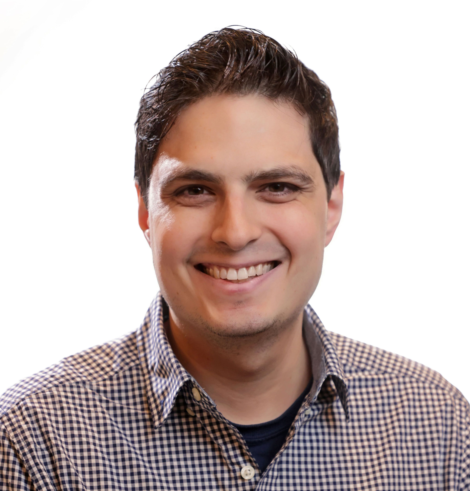

mcarbone@bnl.gov | he/him
Google Scholar | ORCiD | GitHub | LinkedIn

Hi and welcome to my website! I am a staff scientist at Brookhaven National Laboratory's Computational Science Initiative. Previously, I received my PhD in chemical physics from the Chemistry Department at Columbia University, where I was a member of David Reichman's group. During this time, I was a Department of Energy Computational Science Graduate Fellow, which allowed me to study both data-driven techniques and fundamental condensed matter theory.
I live with my wife, Sarah, and our cat, Lucy, in Manhattan (New York City). In my free time, I love going to plays and musicals (see here for some of the ones we've seen recently!), watching the Yankees and Giants and exploring all of the excellent restaurants here in the city.
Professional summary
-
Research- My primary role is to be a research "force multiplier": I am an expert in condensed matter theory and machine learning, but my differentiating capability is my fluency in multiple "scientific languages". I bridge the gaps between groups of people with wildly different areas of expertise so that we can more effectively secure funding and do better science. Check out my publications for more details.
-
Software- I don't just write code for science, I love creating quality, reusable, documented and continuously tested/deployed software. Current languages I use (and some highlights of packages I've created) are:
-
Outreach- I am committed to a more equitable scientific community, and have over 10 years of experience and active participation in outreach, education, workforce development and DEIA (diversity, equity, inclusion and accessibility) efforts. Please see a summary of my activities, and my outreach statement here.